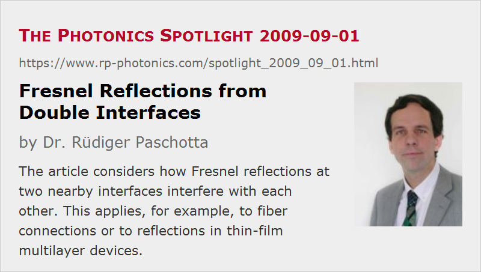

Fresnel Reflections from Double Interfaces
Posted on 2009-09-01 as a part of the Photonics Spotlight (available as e-mail newsletter!)
Permanent link: https://www.rp-photonics.com/spotlight_2009_09_01.html
Author: Dr. Rüdiger Paschotta, RP Photonics Consulting GmbH
Abstract: The article considers how Fresnel reflections at two nearby interfaces interfere with each other. This applies, for example, to fiber connections or to reflections in thin-film multilayer devices.

Losses at Fiber Connections
Imagine that we put two fiber ends close together, with a very tiny air gap in between, and with negligible offset of the fiber cores. How about coupling losses resulting from the Fresnel reflections at the two fiber ends?
Some people would just calculate the reflection of a single air–glass interface, which is about 3.5%, and assume that you get about twice that for the transition from glass to air and back into glass. This is wrong, however. It is not only that light reflected at the second interface can be reflected again at the first interface. Such multi-pass effects are not that important for low reflectivities. The crucial point is that there are interference effects.
If the air gap between the fibers is much smaller than the wavelength, there is only a negligible optical phase shift associated with the path in air. In that situation, the reflections at the two interfaces largely cancel each other, because they are out of phase: one transition is from glass to air, the other one from air to glass. So the total reflected amplitude is close to zero, and the transmission losses are very small.
The interference of the reflected components becomes constructive when the air gap grows to a quarter wavelength, producing an additional sign change of the amplitude for the double pass in air. In that case, you get approximately 2 times the reflected amplitude (comparing with a single interface), or 4 times the reflected power.
Destructive or constructive interference can also occur at larger air gaps, but there are then additional aspects to consider:
- The larger the distance, the more will the round-trip phase shift depend on the optical wavelength.
- Also, there is some degree of beam expansion between the two interfaces. This makes a full calculation much more complicated, since we don't have a simple single-mode problem any more. Essentially, there can no more be fully constructive or destructive interference.
Destructive Interference in Multilayer Devices
There are similar interference effects in certain thin film multilayer structures. For example, a surface-emitting semiconductor laser structure may contain quantum well gain regions, which have a somewhat different refractive index than the surrounding material. Nevertheless, there are hardly any reflections at these quantum wells. The reason is that the reflections from both sides nearly cancel each other, because the quantum well thickness is usually far below an optical wavelength.
Incoherent Calculations for Large Gaps
For large distances between two reflecting surfaces, one sometimes uses an incoherent calculation of the reflection and transmission. Here, one assumes that optical powers rather than amplitudes must be added. This is justified, for example, when the device is probed with broadband light, so that different spectral components have different phase relations. As long as one is not interested in the detailed effects on the different wavelength components, but only in the overall reflected or transmitted power, one can assume random phases, so that powers are to be added. That situation arises, for example, when sun light is getting through an ordinary window.
This article is a posting of the Photonics Spotlight, authored by Dr. Rüdiger Paschotta. You may link to this page and cite it, because its location is permanent. See also the RP Photonics Encyclopedia.
Note that you can also receive the articles in the form of a newsletter or with an RSS feed.
Questions and Comments from Users
Here you can submit questions and comments. As far as they get accepted by the author, they will appear above this paragraph together with the author’s answer. The author will decide on acceptance based on certain criteria. Essentially, the issue must be of sufficiently broad interest.
Please do not enter personal data here; we would otherwise delete it soon. (See also our privacy declaration.) If you wish to receive personal feedback or consultancy from the author, please contact him e.g. via e-mail.
By submitting the information, you give your consent to the potential publication of your inputs on our website according to our rules. (If you later retract your consent, we will delete those inputs.) As your inputs are first reviewed by the author, they may be published with some delay.
|  |
If you like this page, please share the link with your friends and colleagues, e.g. via social media:
These sharing buttons are implemented in a privacy-friendly way!